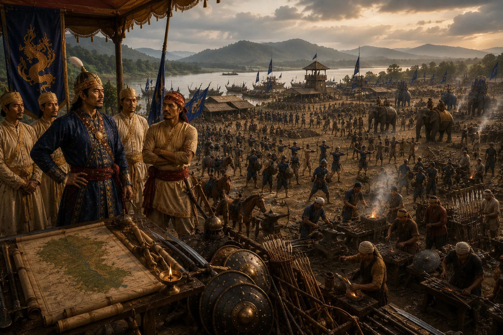

Total Military Reorganization After Alaboi
1669–1670 · Against the Mughal Empire

Chakradhwaj and Lachit regroup, constructing massive defensive mud ramparts (Gars) around Saraighat and converting strategy to pure riverine warfare.
Sources have not yet been catalogued for this record.
People: Atan Burhagohain, Chakradhwaj Singha (Supangmung), Lachit Borphukan
Open this scene in the interactive archive · Follow this event on MAP